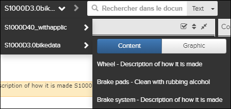
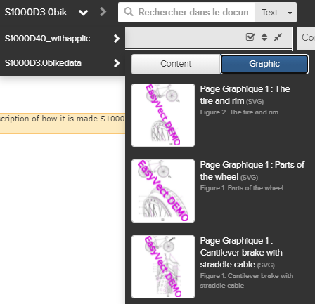
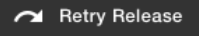
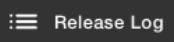
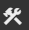
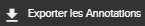
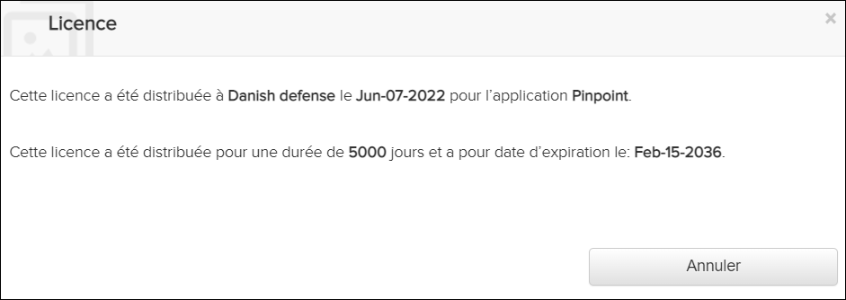

La Barre d’action contient des icônes vous permettant d'effectuer des actions dans
Pinpoint. Certaines des icônes  apparaissent toujours dans la Barre d’action. Sélectionnez
l'icône Autres actions à la fin de la Barre
d'action pour afficher le menu déroulant, qui contient des icônes
supplémentaires. D'autres icônes sont réactives et peuvent apparaître dans le menu déroulant
si la largeur de votre page est inférieure ou égal à 1280 pixels.
apparaissent toujours dans la Barre d’action. Sélectionnez
l'icône Autres actions à la fin de la Barre
d'action pour afficher le menu déroulant, qui contient des icônes
supplémentaires. D'autres icônes sont réactives et peuvent apparaître dans le menu déroulant
si la largeur de votre page est inférieure ou égal à 1280 pixels.
Le tableau ci-dessous décrit les boutons et les champs de la barre d’action:
| Lieu | Eléments | La Description |
|---|---|---|
| Barre d'action | Le logo dans le coin supérieur gauche de la Barre d'action. En cliquant sur ce logo, vous serez dirigé à la page d'accueil "Page d’accueil", soit la page par défaut, ou une page définie dans la fenêtre La fenêtre de configuration. | |
| Barre d'action |  Menu Historique du contenu récent Menu de l'historique graphique récent |
Ce menu dans la Barre d'action supérieure comporte deux
onglets, l'onglet Contenu et l'onglet
Graphique. Par défaut, l'onglet Contenu est sélectionné et affiche une liste des pages que vous avez ouvertes récemment. Les pages les plus récemment ouvertes sont en haut de la liste. Lorsque vous sélectionnez une autre publication, la sélection passe à cette publication. Cliquez sur l'onglet Graphique pour afficher une liste des graphiques que vous avez ouverts récemment. Les graphiques les plus récemment ouverts sont en haut de la liste. Lorsque vous sélectionnez une autre publication, la sélection passe à cette publication. Lorsque vous cliquez sur un lien pour une publication de lien symbolique, le contenu ou le graphique de la publication d'origine (cible) s'ouvre. Remarque : L'onglet que vous sélectionnez persiste lorsque vous développez
à nouveau la liste déroulante de l'historique. Par exemple, si vous avez
précédemment sélectionné l'onglet Graphique , cet onglet
est sélectionné automatiquement.
|
| Utilisez ces boutons pour accéder au document précédent ou suivant. Important : Les boutons "Précédent / Suivant" du navigateur (Internet
Explorer, Firefox, Chrome...) ne sont pas pris en charge par Pinpoint. Ces boutons
ne doivent donc pas être utilisés. En effet seul les boutons "Précédent / Suivant"
de Pinpoint doivent être utilisés pour naviguer entre les documents
|
||
| Barre d'action |
 |
Le champ de recherche dans la Barre d’action est
disponible pour tous. types de publication. Dans la zone de recherche, vous pouvez
effectuer ces recherches:
Remarque : La recherche de texte ou FIN que vous sélectionnez est persister. La
prochaine fois que vous ouvrez votre navigateur, cette option reste
sélectionnée.
Pour une recherche de texte, sélectionnez Texte (par
défaut) dans le menu déroulant. menu. Entrez le texte que vous souhaitez rechercher
et appuyez sur Entrée. Si la fonction de recherche prédictive avec saisie
semi-automatique est activée, une liste déroulante apparaît avec des suggestions
de mots clés en fonction de l'historique de recherche, les fautes d'orthographe
courantes, les synonymes et les abréviations. Sélectionnez un mot-clé et appuyez
sur Entrée.
Vous serez
ensuite redirigé vers le volet Recherche en texte intégral où
vous pouvez afficher les résultats de la recherche et éventuellement ajouter
d'autres paramètres de recherche. Vous pouvez sélectionner Avancé dans le
menu déroulant pour ouvrir le menu Complet Volet Recherche de texte sans
entrer de valeur dans la recherche champ. Remarque : Si le début de votre entrée correspond à la suggestion la plus
pertinente, cette suggestion est rempli automatiquement.
Pour plus d'informations, voir Effectuer une recherche de texte intégral. Reportez-vous à "Configuration de la recherche prédictive avec saisie semi-automatique" dans la Flatirons Pinpoint Configuration Guide. Pour une recherche FIN, sélectionnez une publication qui prend en charge FIN recherches, puis sélectionnez FIN dans le menu déroulant. Entrez le numéro d'identification fonctionnel (FIN) que vous avez voulez rechercher et appuyez sur Entrée. Vous serez alors redirigé vers le volet FIN / Zone / Panel Search vous pouvez voir les résultats de la recherche et éventuellement ajouter plus paramètres de recherche. Pour plus d'informations, Effectuer une recherche sur FIN / Zone / Panneau. |
| Barre d'action | Non applicable pour Pinpoint Standalone Light. Cette icône apparaît dans la Barre d'action pour les utilisateurs qui ont des autorisations pour le privilège Peut définir des privilèges sur les révisions dans le Access Control. Il apparaît seulement pour les publications qui sont publiées. En cliquant sur l'icône, l'utilisateur peut donner l'autorisation d'accéder à la publication pour un ensemble de groupes d'utilisateurs.Remarque : Seuls les groupes d'utilisateurs de votre
organisation peuvent sélectionner et autoriser l'accès à la
publication.
Pour plus d'informations, voir Définition des privilèges sur les révisions. |
|
| Barre d'action | Non applicable pour Pinpoint Standalone Light. Cette icône apparaît dans la Barre d'action pour les utilisateurs disposant des droits d'écriture pour le Can create or remove restricted links privilège d'Access Control.Cliquez sur l'icône pour ouvrir la boîte de dialogue Gérer liens restreints qui vous permet de gérer les liens restreints. Faire référence à Gérer les liens restreints. |
|
| Barre d'action | Non applicable pour Pinpoint Standalone Light. Cette icône apparaît dans la Barre d'action pour les utilisateurs qui ont des autorisations pour le privilège Peut afficher les détails de l'import de Publication dans Access Control. En cliquant sur l'icône, l'utilisateur peut afficher une liste de toutes les publications (données importées dans l'ordre décroissant). Cela inclut le statut d'importation actuel et la progression, avec un pourcentage d'achèvement. Faire référence à Affichage du statut sur l'import de publication.Si vous sélectionnez l'option pour télécharger les dernières révisions
manuellement dans le volet Configuration, l’icône s’affiche le nombre de
publication disponible au téléchargement, par exemple, Remarque : Cette icône peut apparaître dans le menu déroulant
|
|
| Barre d'action | Non applicable pour Pinpoint Standalone Light. Cette icône ouvre une liste déroulante des opérations possibles pour la publication actuellement consultée. |
|
Non applicable pour Pinpoint Standalone Light. Cette option de menu rend la publication officielle et disponible pour les autres téléspectateurs. Reportez-vous au Knowledge Center S Publier / Processus de libération. |
||
Non applicable pour Pinpoint Standalone Light. Cette option de menu supprime la révision de publication from Pinpoint et Data Manager. Reportez-vous au Knowledge Center S Publier / Processus de libération. |
||
 |
Not applicable for Pinpoint Standalone Light. If the release fails, select this option to retry the release. Refer to Knowledge Center S Publier / Processus de libération. |
|
Not applicable for Pinpoint Standalone Light. If the rollback fails, select this option to retry the rollback. Refer to Knowledge Center S Publier / Processus de libération. |
||
Non applicable pour Pinpoint Standalone Light. Cette option de menu supprime la publication sélectionnée révision et l'importe à nouveau à partir de Data Manager. Reportez-vous au Knowledge Center S Publier / Processus de libération. |
||
| Resynchroniser | Non applicable pour Pinpoint Standalone Light. Si une publication échoue, cette option de menu s'affiche. Il vous permet de réessayer la synchronisation. |
|
| Réessayer la resynchronisation | Non applicable pour Pinpoint Standalone Light. Si une resynchronisation échoue, cette option de menu s'affiche. Il vous permet d'essayer une autre resynchronisation. |
|
 |
Non applicable pour Pinpoint Standalone Light. Cette option de menu ouvre un journal donnant des détails spécifiques sur ce qui s'est passé pendant le processus de sortie. |
|
Non applicable pour Pinpoint Standalone Light. Si vous consultez un brouillon de publication pour une publication dans Knowledge Center A, cette option de menu s'affiche. Il migre les pièces jointes pour la Knowledge Center A/Pinpoint une révision de bibliothèque. Reportez-vous au Migrer les Attachements. |
||
| Barre d'action | Non applicable pour Pinpoint Standalone Light. Cette icône ouvre la fenêtre de sélection de fichier pour permettre à l'utilisateur de sélectionner un package Pinpoint Neutral ou un seul fichier PDF à importer. Reportez-vous à se référer à Importer un paquet de données.Remarque : Cette icône peut apparaître dans le menu déroulant
|
|
| Barre d'action |
|
Cette icône s’affiche dans la Barre d’action lorsque la
fonction de panier est activée (comportement par défaut). Lorsque vous ajoutez des
pièces au panier, l’icône indique le nombre d'éléments, par exemple, Lorsque vous sélectionnez l'icône |
| Barre d'action | La fenêtre Filter s'ouvre en cliquant sur l'icône Remarque : Les administrateurs système peuvent
configurer les colonnes visibles et l'ordre dans la page de sélection
efficacité/applicabilité Aussi le format qui affiche les produits sélectionnés
dans la page de sélection efficacité/applicabilité et l'en-tête de l'application.
Reportez-vous au sujet "Customize Effectivity Selection Columns" dans le
Flatirons Pinpoint Configuration Guide.
Remarque : Cette icône peut
apparaître dans le menu déroulant
|
|
| Barre d'action | Gestionnaire de signets | Cliquez sur cette icône pour ouvrir le gestionnaire de favoris. Pour plus
d'informations, voir Les listes de signets. Remarque : Cette
icône peut apparaître dans le menu déroulant
|
| Barre d'action | Cliquez sur cette icône pour ouvrir ou enregistrer le document en cours au
format PDF. Remarque : Cette fonctionnalité n'est pas disponible pour les publications
HTML. Un message d'erreur s'affiche lorsque vous tentez d'imprimer la
composition.
Remarque : Cette icône peut apparaître dans le menu déroulant
|
|
| Barre d'action | Cette icône ouvre l'application Pinpoint dans un nouvel onglet de navigateur. La surbrillance bleue est utilisée pour indiquer que vous êtes dans la Pinpoint. La même couleur est appliquée sur les icônes Data Manager et Access Control lors du déplacement dans ces modules. | |
| Barre d'action | Non applicable pour Pinpoint Standalone Light. Cette icône s'ouvre la Data Manager une nouvelle fenêtre du navigateur.Remarque : Cette icône n'apparaît dans la Barre
d'action que si l'utilisateur a l’accès à application du Data
Manager
Pour plus d'informations, voir la fonction d'aide |
|
| Barre d'action | Non applicable pour Pinpoint Standalone Light. Cette icône ouvre l'application Access Control dans un nouvel onglet du navigateur.Remarque : Cette icône n'apparaît dans la Barre
d'action que si l'utilisateur a l’accès à application d’Access
Control
Pour plus d'informations, voir la fonction d'aide |
|
| Barre d'action |  Tools |
Non applicable pour Pinpoint Standalone Light. Cette icône ouvre un menu déroulant de liens configurés vers des applications
externes. Cliquez sur un lien pour ouvrir l'application dans un nouvel
onglet.
Remarque : Cette fonctionnalité doit être configurée dans le serveur Pinpoint
par un administrateur système informatique. S'il n'est pas configuré, l'icône
n'est pas visible. Vous devez soumettre une demande de service pour modifier ces
liens.
|
| Barre d'action | Non applicable pour Pinpoint Standalone Light. Ouvre une page de Configuration où il est possible de définir un URL de la page d'accueil. Pour plus d'informations, voir La fenêtre de configurationRemarque : Cette icône peut apparaître dans le menu déroulant
|
|
| Barre d'action | Choisissez la langue | Cliquez sur cette icône pour sélectionner la langue utilisée pour l'application
Pinpoint:
Remarque : Pinpoint détermine la langue par défaut. à utiliser en fonction d'un
cookie stocké sur votre ordinateur. Si un cookie est trouvé pour la langue
sélection (anglais ou français), Pinpoint utilise cette la langue. Si aucun cookie
n'est trouvé pour la langue sélection, Pinpoint utilise la langue trouvée dans la
configuration du navigateur (le navigateur par défaut la langue).
|
| Barre d'action | Cliquez sur cette icône pour afficher le menu déroulant avec des composants
supplémentaires. Les composants listés toujours apparaissent dans le menu déroulant.
Si la largeur de la page est inférieure ou égale à 1280 pixels, d'autres icônes avec un comportement réactif se déplacent vers le menu déroulant. |
|
 |
Cliquez sur cette icône pour exporter des annotations. Reportez-vous au volet Les Annotations. | |
| Cliquez sur cette icône pour importer des annotations. Reportez-vous au volet Les Annotations. | ||
| Cliquez sur cette icône pour afficher la barre de réglage de la luminosité. Réglez le curseur pour atténuer ou éclaircir l'affichage. | ||
| Cliquez sur cette icône pour ouvrir l'aide dans une nouvelle fenêtre de navigateur. La langue du guide d'utilisation dépend de la langue sélectionnée pour l'application, soit l'anglais par défaut) ou le français. | ||
| Cliquez sur cette icône pour ouvrir les détails de la
Licence pour Pinpoint.  Reportez-vous à la rubrique "Configuring the License for Pinpoint" dans Flatirons Pinpoint Configuration Guide. |
||
| Cliquez sur cette icône pour vous déconnecter de l'application. |